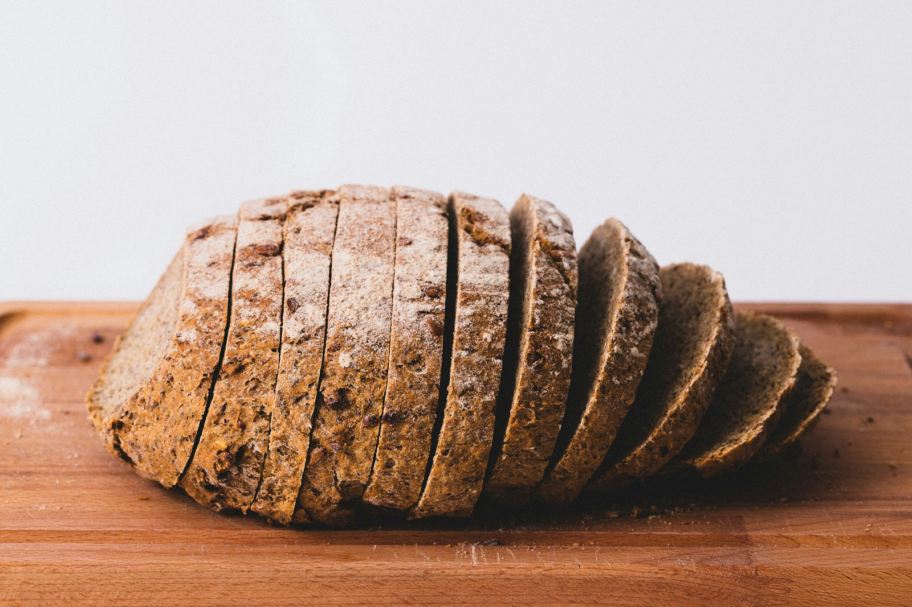
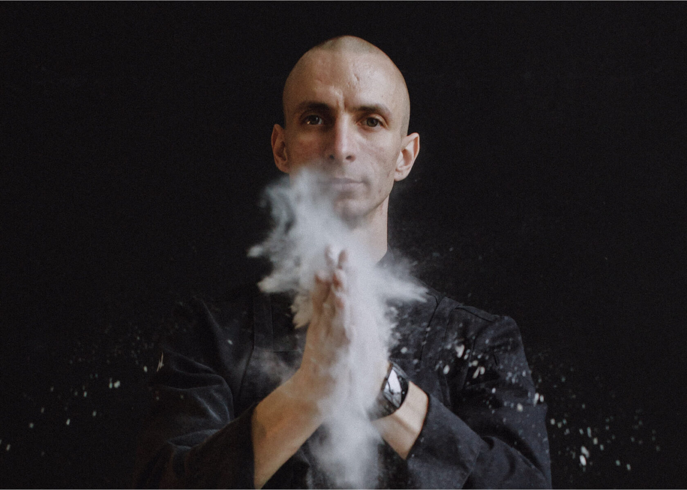
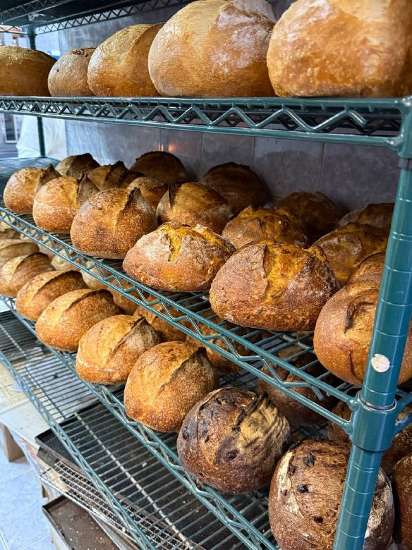
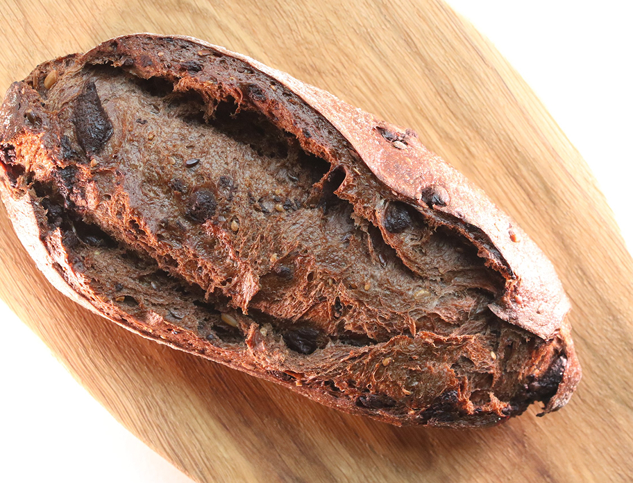

Восемь концепций: четыре с историей на главной и четыре с одним фото на весь экран. У Кадра и Муки есть ещё вариант, где каталог идёт сразу следом. Раздел «Еда» — в меню каждого.
1001отзыв на Яндекс Картах, награда «Хорошее место»
Три вещи, из которых получается хлеб
От 12 часов в холоде — и ни часом меньше.
I · Закваска
fermentum
Дикие дрожжи и молочнокислые бактерии вместо промышленных. Тесто ферментируется в холоде от 12 часов.
II · Масло
butyrum
Работаем только на качественном голландском сливочном масле 82,5%. Без растительных жиров и консервантов.
III · Руки
manus
Руки — и есть ремесло. Тесто чувствует ладонь: где его сложить, где дать постоять, где остановиться. Поэтому каждая булка немного своя, и в этом её честность.
Дикие дрожжи и молочнокислые бактерии вместо промышленных. Тесто ферментируется в холоде от 12 часов.
II · Масло
butyrum
Работаем только на качественном голландском сливочном масле 82,5%. Без растительных жиров и консервантов.
III · Руки
manus
Руки — и есть ремесло. Тесто чувствует ладонь: где его сложить, где дать постоять, где остановиться. Поэтому каждая булка немного своя, и в этом её честность.
Здравствуйте. Пишем мало, печём долго. Хлеб на закваске ночует в холоде от двенадцати часов: дикие дрожжи и молочнокислые бактерии вместо промышленных. Слоёное ведём только на качественном голландском масле, 82,5%, без растительных жиров и консервантов.
Руки — и есть ремесло. Тесто чувствует ладонь: где его сложить, где дать постоять, где остановиться. Поэтому каждая булка немного своя, и в этом её честность. Если хотите к столу в этом году штоллен, фруткейк или паннетоне — предзаказ открыт до 20 декабря.
2020открылись
700+штолленов за сезон
1001отзыв
Что можно забрать сегодня

Жизнь пекарни — это доска, мука и окно, в которое уже светло.
Хотелось места, куда приходят не по делу, а друг к другу. Хлеб, который делят за одним столом, — это тихое доверие: на всех, кто сел рядом. Так было у наших бабушек. Так есть у нас. Так и останется.
Дикие дрожжи и молочнокислые бактерии. Тесто ферментируется в холоде от 12 часов.
Масло
Слоёное — только на качественном голландском сливочном масле 82,5%. Без растительных жиров и консервантов.
Руки
Руки — и есть ремесло. Тесто чувствует ладонь, поэтому каждая булка немного своя.
Жизнь пекарни

Слово основателя
Хотелось места, куда приходят не по делу, а друг к другу. Хлеб, который делят за одним столом, — это тихое доверие: на всех, кто сел рядом. Так было у наших бабушек. Так есть у нас. Так и останется.
Хотелось места, куда приходят не по делу, а друг к другу. Хлеб, который делят за одним столом, — это тихое доверие: на всех, кто сел рядом. Так было у наших бабушек. Так есть у нас. Так и останется.
Дмитрий Никитин основатель
Каталог
Соберите заказ и заберите его в одной из пекарен. Вес ремесленной продукции может отличаться на 5–10%.

Отпекаем с 5 утраХлеб на закваске
Еда
Меню кофейни на улице Сукромка, 5. Сначала список, справа — фотографии блюд: их можно листать.
О пекарне
Первая и домашняя ремесленная пекарня Мытищ. С 2020 года печём хлеб на закваске, слоёное и то, что хочется поставить на середину стола.
Наша история
Сначала был просто хлеб.
Каждую булку мы держим столько, сколько ей нужно. Закваска работает ночь, масло остаётся сливочным, руки не торопят тесто. Хочется, чтобы к этому вкусу возвращались — не по делу, а потому что за столом спокойно.
Мы печём для своих: для тех, кто садится рядом и делит хлеб. Так теплее, и так честнее.
Между нами — больше, чем хлеб.

Мы не ускоряем то, чему нужно время. Дикие дрожжи и молочнокислые бактерии вместо промышленных. Тесто ферментируется в холоде от 12 часов.
Слоёное — только на качественном голландском сливочном масле 82,5%. Без растительных жиров и консервантов.
Руки — и есть ремесло. Тесто чувствует ладонь, поэтому партии немного отличаются. Так и должно быть, когда хлеб живой.
2020год открытия первой пекарни
700+штолленов на новогодних столах за сезон
1001отзыв на Яндекс Картах, награда «Хорошее место»
Для бизнеса
Оптовым гостям — отдельная дверь. Кофейням, магазинам и офисам. На главной мы об этом не рассказываем: там стол для своих. Прайс от 10 августа отдаём менеджеру в Telegram — на витрине розница.
Как это устроено
Коротко пишете, что нужно и как часто.
Собираем пробную партию хлеба или слоёного.
Договариваемся о ритме: утро Сукромки или Новомытищинского.
Отвечаем в рабочий день. Это макет: заявка остаётся в браузере и никуда не отправляется.
Контакты
Две пекарни в Мытищах. Звоните, пишите в Telegram или просто приходите к тёплой полке.
Хотелось места, куда приходят не по делу, а друг к другу. Хлеб, который делят за одним столом, — это тихое доверие: на всех, кто сел рядом. Так было у наших бабушек. Так есть у нас. Так и останется.
Дмитрий Никитин основатель
Сезон · до 20 декабря
Предзаказ новогоднего стола
Штоллен, фруткейк и паннетоне. Ассортимент на этой странице меняется дважды в год. К Пасхе здесь будут паннетоне, кулич и творожная пасха.
На концепции стоят фото близкие по настроению. В финальном сайте их сменят ваши штоллены.